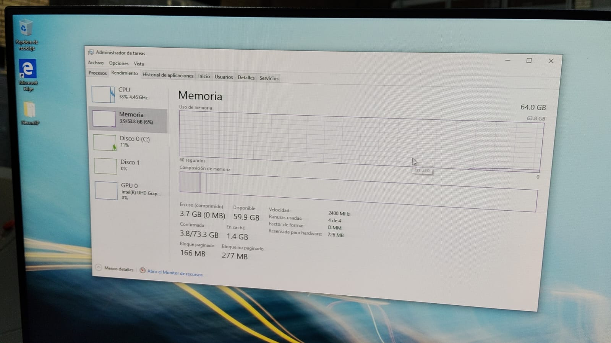

ARQUITECTURA DE COMPUTADORAS
Practica 3: Intercalacion de RAM
Practica 3: Intercalacion de RAM
Observar el estado del equipo antes de una actualización.
Se muestra la ventana del Administrador de tareas de Windows (específicamente en la pestaña de Rendimiento y seleccionando la sección de Memoria). Sin embargo, corresponden a dos momentos o configuraciones de hardware drásticamente diferentes.

Esta imagen muestra el estado del equipo antes de una actualización masiva de memoria o con un módulo básico de RAM. Total de Memoria: El sistema reconoce 16.0 GB de RAM total (15.8 GB utilizables). Uso actual: Se están utilizando 3.2 GB (un 22% de la capacidad total), dejando 12.3 GB disponibles. Velocidad: La memoria está corriendo a 2667 MHz. Ranuras usadas: Indica 1 de 4. Esto significa que el equipo tiene un solo módulo físico de RAM instalado en la placa madre.

Esta imagen muestra el equipo después de una expansión de hardware muy importante. Total de Memoria: El sistema ahora reconoce 64.0 GB de RAM total (63.8 GB utilizables). Uso actual: Se están utilizando 3.7 GB. Como ahora el total es gigantesco, este consumo representa apenas el 6% de la capacidad, dejando la friolera de 59.9 GB disponibles. Velocidad: La velocidad bajó ligeramente a 2400 MHz. Ranuras usadas: Indica 4 de 4. Significa que se han ocupado todos los slots disponibles de la placa madre (probablemente instalando 4 módulos de 16 GB cada uno).